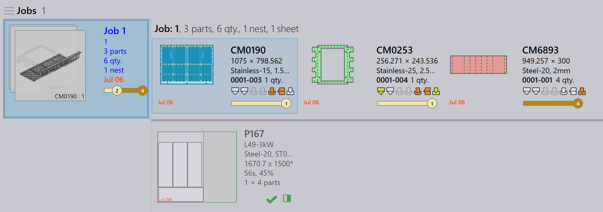

自動端材管理
端材を有効にする
TruSmartCAMは、ネスティング中にレイアウトからの自動端材シート作成をサポートしています。この機能は、TecZone Laser機械でのみ利用可能です。
-
ファクトリー → マシン → マシンの初期設定… → Skeleton cuts をクリックします。
-
Slice Sheet Skeleton & Create Remainder Sheet オプションを選択して、この機能を有効にします。
有効にすると、ネストされたシートの残りのエリアは、XとYで割り当てられた最小端材シート値に基づいて端材シートにスライスされます。

自動端材を設定する
-
ファクトリー → 設定 → ジョブ をクリックします。
-
ネスティング（不）許可でのシート在庫の更新 および 残り在庫管理の自動化 を選択します。

自動端材
パーツをネスティングする際、残ったシートエリアが最小シート値XとYを満たす場合、TruSmartCAMは残ったスペースから自動的に端材シートを作成します。
-
ジョブネストビューでは、端材シートを持つネストは緑色の境界線とグレーの背景で表示されます。

-
ネストをダブルクリックして、ネスト詳細ページを開きます。端材シート情報は、端材シートのサイズ、数量、エリアとともに表示されます。

-
ネストを右クリックし、Editを選択してTecZoneで開きます。ネストには、パーツ間のスライスラインとスケルトンスライスライン、そして端材寸法が刻まれた状態が表示されます。（材料、厚さ、端材サイズ）。
端材寸法の刻印マークにより、オペレーターは測定せずにシートを選択でき、将来のネストで簡単に使用できます。

完了としてマーク… をクリックすると、端材シートが緑色のチェックマークで表示され、ネストが完了したことを示します。部分的に陰影のある正方形のアイコンは、端材シートが作成され、シート在庫に更新されたことを示します。

シートデータベースは、端材シートのサイズと数量で更新され、シートサイズの最後にアスタリスク（*）記号で識別されます。端材シートには緑色の境界線があります。

自動計画またはインタラクティブ計画のジョブは、端材シートをネスト計画で高優先度と見なし、未使用の端材がない状態にショップフロアを保つために最初に使用されることを保証します。